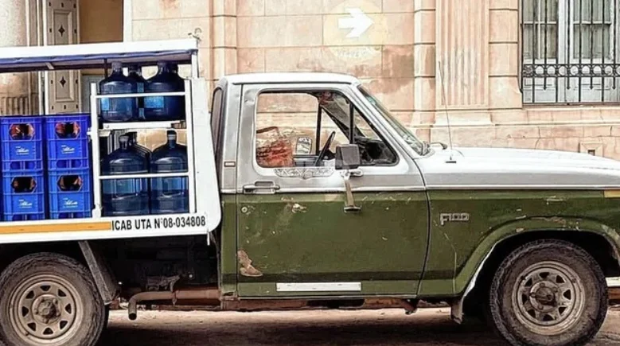

Descubre la historia de Aguas de Mesa Delfina, una sodería con raíces familiares arraigadas en Villa Maria desde hace más de 15 años. Fundada por Mariano Donayo, quien heredó el legado de su padre, la sodería nació de la necesidad en el barrio y la ausencia de un repartidor de soda.